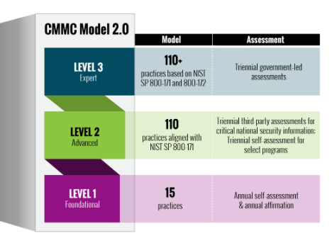

Both OWASP’s Software Assurance Maturity Model (SAMM) and the
Building Security in Maturity Model (BSIMM), developed by the Synopsys Software
Integrity Group (formerly Cigital), can help organizations with their software
security strategies and initiatives. Developed and introduced in the late 2000s,
both OWASP’s SAMM and BSIMM are built on solid foundations and from considerable
software security experience. While SAMM may primarily be considered as guidance
from software security experts, BSIMM is primarily based on the current software
security practices of participating organizations.
Objectives
Explain OWASP’s Software Assurance Maturity Model (OpenSAMM) and Building
Security in Maturity Model (BSIMM).
Define Software Security Milestones and Checkpoints within a DevSecOps Pipeline.
Overview
Framework and maturity models, including OWASP’s OpenSAMM and
BSIMM, can assist organizations of any size with their formulation and
implementation of a strategy for software security.
Software Security Maturity Models:
SAMM, DSOMM, and BSIMM
When OWASP introduced Comprehensive, Lightweight Application
Security Process (CLASP) in the early 2000s, it was well received by the software
security community. It was designed to aid organizations with the identification and
insertion of security activities and checkpoints into each phase of the SDLC,
regardless of the development methodology followed. It should be noted that CLASP is
now considered obsolete, and alternatives (e.g., OpenSAMM) should be explored. In
addition to OWASP’s OpenSAMM, a second software security framework, BSIMM, will also
be discussed.
SAMM
OWASP’s is an open
framework intended to assist organizations of any size with their formulation and
implementation of a strategy for software security. As stated by OWASP, SAMM may be
used to meet several objectives:
Evaluating an organization’s existing software security practices.
Building a balanced software security program in well-defined iterations.
Demonstrating concrete improvements to a security assurance program.
Defining and measuring security-related activities within an organization.
SAMM Overview
SAMM was designed to be flexible so that it may be applied to
any style of development, it was built upon the principles of:
Striking a balance between short-term gains and long-term goals through
specification of the software security program in small iterations.
Providing flexibility in the software security framework to allow tailoring of
choices based on organizations’ risk tolerance and other factors.
Taking simple, well-defined, and measurable steps in building and assessing an
assurance program.
Core Business Functions of , Construction, Verification,
and Operation provide the foundation of the model, and each of those functions has
three security practices tied to it, as shown in the figure.
Governance. Concerned with the processes and activities for managing
the overall software development activities.
Construction. Concerned with the processes and activities that
generally include product management, requirements gathering, high-level
architecture specification, detailed design, and implementation.
Verification. Concerned with the processes and activities that
typically include quality assurance work such as testing, review and evaluation.
Operation. Concerned with the processes and activities that typically
include product deployment and the normal operations of software in production.
Security Practices (as Described by
OWASP)
Strategy and Metrics. Involves the overall strategic direction of the
software assurance program and instrumentation of processes and activities to
collect metrics about an organization’s security posture.
Policy and Compliance. Involves setting up a security, compliance, and
audit control framework throughout an organization to achieve increased
assurance in software under construction and in operation.
Education and Guidance. Involves increasing security knowledge amongst
personnel in software development through training and guidance on security
topics relevant to individual job functions.
Threat Assessment. Involves accurately identifying and characterizing
potential attacks upon an organization’s software to better understand the risks
and facilitate .
Security Requirements. Involves promoting the inclusion of
security-related requirements during the software development process to specify
correct functionality from inception.
Secure Architecture. Involves bolstering the design process with
activities to promote secure-by-default designs and control over technologies
and frameworks upon which software is built.
Design Review. Involves inspection of the artifacts created from the
design process to ensure provision of adequate security mechanisms, and
adherence to an organization’s expectations for security.
Implementation Review. Involves assessment of an organization’s source
code to aid vulnerability discovery and related mitigation activities as well as
establish a baseline for secure coding expectations.
Security Testing. Involves testing the organization’s software in its
runtime environment to both discover vulnerabilities and to establish a minimum
standard for software releases.
Issue Management. Involves establishing consistent processes for
managing internal and external vulnerability reports to limit exposure and
gather data to enhance the security assurance program.
Environment Hardening. Involves implementing controls for the operating
environment surrounding an organization’s software to bolster the security
posture of applications that have been deployed.
Operational Enablement. Involves identifying and capturing
security-relevant information needed by an operator to properly configure,
deploy, and run an organization’s software.
SAMM Maturity Levels
Each of the 12 security practices has three defined maturity
levels and an implicit starting point at zero. The details for each level differ
between the practices, but they generally represent:
0—Implicit starting point
representing unfulfilled security practices
1—Initial understanding and ad hoc
provision of security practice
2—Increased efficiency and/or
effectiveness of the security practice
3—Comprehensive mastery of the
security practice at scale11
Earlier DevSecOps was defined as the sum of DevOps and security.
Organizations can leverage DevSecOps to mature software security capabilities while
utilizing SAMM. The is a
recent OWASP project to mature software development operations and ensure
operational software security is sufficiently matured. Often the security and safety
practices utilized within production environments are present in the software
development pipeline prior to integration and release. DSOMM describes security
measures that should be implemented and aids in prioritizing.
DSOMM describes phases, and subphases of DevSecOps as dimensions
and subdimensions respectively. For each dimension DSOMM describes development
pipeline maturity for five prescribed levels of maturation:
Level 1: Basic understanding of
security practices
Level 2: Adoption of basic security
practices
Level 3: High adoption of security
practices
Level 4: Very high adoption of
security practices
Level 5: Advanced deployment of
security practices at scale12
Building Security in Maturity Model
(BSIMM)
The framework was introduced based
on the research and data gathered from the Synopsys Software Integrity Group
(formerly Cigital), a consortium of organizations that practice software security.
BSIMM consists of practices across four domains, and 119 activities to assess
initiatives. Currently, BSIMM has over 120 participating firms, has reached its
tenth iteration, and serves as a resource for software security stakeholders. Member
organizations come from many different business sectors, including financial
services, healthcare, technology, and independent software vendors, among others.
Four Domains and Twelve
Practices
The four domains of the BSIMM framework are Governance,
Intelligence, SSDL Touchpoints, and Deployment. Collectively, these domains are
concerned with various practices as noted in this figure.13
Figure 7: BSIMM Software Security Framework (SSF) Domains
and Practices
Cybersecurity Maturity Model
Certification (CMMC)
Cybersecurity Maturity Model Certification (CMMC) is a
program developed by the U.S. DoD that is designed to enforce protection and
sensitive unclassified information that is shared by the Department with its
contractors and subcontractors. CMMC focuses on the protection of federal contract
information and other sensitive information not suitable for public release.
Security practitioners within organizations that do business with the U.S.
government should be aware of CMMC guidance and their organizations present level of
maturity. When CMMC is fully implemented, contractors will be required to meet
certain CMMC levels based on the sensitivity of information they would process. When
development of software applications includes the use of sensitive government
information it is likely CMMC will apply.
CMMC Model Structure
The DoD is presently developing CMMC version two, which aims to
simplify compliance by leveraging selfassessments for some requirements, reinforce
industry and DoD cooperation regarding cyber incidents, and emphasize the importance
of protecting sensitive information in comparison with the first release of
guidance. CMMC 2.0, adopts a tiered compliance model where companies entrusted with
sensitive information must implement security safeguards at progressively advancing
levels based on the information processed. These requirements must also be adopted
by any subcontractors. The levels of compliance are Level 1 (Foundational), Level 2
(Advanced), and Level 3 (Expert). Level 1 is characterized by a mild annual
self-assessment and attestation. Level 2 aligns with NIST SP 800-171—“Protecting
Controlled Unclassified Information in Nonfederal Systems and Organization”
chapter three protection requirements while Level 3 includes all considerations from
Level 2 and enhancements from NIST 800-172—“Enhanced Security Requirements for
Protecting Controlled Unclassified Information”. The following graphic
shows the present shift to CMMC 2.0.

Figure 8: CMMC Model 2.0
Governance and Strategy
As mentioned previously, one of the four critical business
functions in SAMM is governance. Governance is described by SAMM as being centered
on the processes and activities related to how an organization manages overall
software development activities. More specifically, this includes concerns that
affect cross-functional groups involved in development, as well as business
processes that are established at the organization level. Governance involves
strategy and metrics, policy and compliance, and education and guidance.
The same is true with respect to BSIMM. Governance includes
those practices that help organize, manage, and measure a software security
initiative. Staff development is also a central governance practice. Practices under
governance are described as strategy and metrics, compliance and policy, and
training. These practices encompass:
Planning
Assigning roles and responsibilities
Identifying software security goals
Determining budgets
Identifying metrics and gates
Identifying controls for compliance regimens
Developing contractual controls such as service-level agreements (SLAs)
Setting organizational software security policy
Auditing against that policy
Training for critical roles in software security
Functional Milestones and Security
Milestones
An analogy can be drawn between milestones in software
development projects and the physical mile markers along the side of a highway used
by travelers. Both of these milestones help measure the progress made toward
achieving our objectives. In software development, they mark important events in
project tasks and help the project stakeholders stay informed about the project
status. For the same fundamental reason that functional milestones are established,
security milestones should also be established.
When describing milestones, a description, a project event, and
a goal are usually among the attributes that are captured. An example of a milestone
name is “preliminary design review,” and an example of a project event is “the
approval of the preliminary design by the stakeholders.” A milestone goal could be
used as the criterion applied to determine whether the milestone has been reached.
Security milestones are established by working in parallel with
the functional milestones throughout the SDLC and constructing corresponding
required security activities that map to and augment the functional milestones with
the required security content. Table 1 lists a few examples.
Functional Milestone
Security Milestone
Identification of user needs
Identification of user security needs
Preparation of project plan
Identification of security areas in the project plan
Creation of preliminary test plans
Creation of preliminary security test plans
Table 1: Sample Functional and Security
Milestones
Security Strategy
A security practitioner in the real world will be unlikely to
face a straightforward scenario where no software security or development operations
exists within an organization—i.e., a clean slate where the buildup security from
the beginning with nothing preexisting. It is equally as unlikely that a security
practitioner will encounter an enterprise scenario where software security and
development operations are matured to a point where sustainment of preexisting best
practices constitutes the entirety of the practitioner efforts. The security
practitioner will face something more complex that resides somewhere between these
two extremes. The first part of addressing software security considerations is to
figure out where the organization presently stands. You must answer two questions:
What is the level of security maturity for the end application (the product
being developed)?
What is the level of security maturity for the organization's development
efforts (how the product is being developed)?
The maturity models described earlier, and others not covered,
can provide a standardized way to describe the present state and future state of
organizational software security. Once the present state of the organization is
understood. The next effort is to get business buy-in for the desired level of
maturity. This is not determined based on the security practitioner's feelings or
desires. The desired state is based on reducing organizational risk to support the
business. The software security practitioner must work with management to achieve
this understanding. The delta between the present and future state of software
security can become a path bridged by milestones and checkpoints that describe the
major changes needed to achieve software security maturation. Milestone planning can
assist with organizational budgeting considerations and checkpoints can provide a
means to validate and verify positive security maturation progress.
Strategy Roadmap (2.3)
Both OWASP’s Software Assurance Maturity Model (SAMM) and the Building Security in Maturity Model (BSIMM), developed by the Synopsys Software Integrity Group (formerly Cigital), can help organizations with their software security strategies and initiatives. Developed and introduced in the late 2000s, both OWASP’s SAMM and BSIMM are built on solid foundations and from considerable software security experience. While SAMM may primarily be considered as guidance from software security experts, BSIMM is primarily based on the current software security practices of participating organizations.
Objectives
Overview
Framework and maturity models, including OWASP’s OpenSAMM and BSIMM, can assist organizations of any size with their formulation and implementation of a strategy for software security.
Software Security Maturity Models: SAMM, DSOMM, and BSIMM
When OWASP introduced Comprehensive, Lightweight Application Security Process (CLASP) in the early 2000s, it was well received by the software security community. It was designed to aid organizations with the identification and insertion of security activities and checkpoints into each phase of the SDLC, regardless of the development methodology followed. It should be noted that CLASP is now considered obsolete, and alternatives (e.g., OpenSAMM) should be explored. In addition to OWASP’s OpenSAMM, a second software security framework, BSIMM, will also be discussed.
SAMM
OWASP’s is an open framework intended to assist organizations of any size with their formulation and implementation of a strategy for software security. As stated by OWASP, SAMM may be used to meet several objectives:
SAMM Overview
SAMM was designed to be flexible so that it may be applied to any style of development, it was built upon the principles of:
Core Business Functions of , Construction, Verification, and Operation provide the foundation of the model, and each of those functions has three security practices tied to it, as shown in the figure.
Figure 6: SAMM Overview10
10 OWASP Foundation; Software Assurance Maturity Model: A Guide to Building Security into Software Development, Version 1.5; https://www.owasp.org/images/6/6f/SAMM_Core_V1-5_FINAL.pdf; retrieved May 2023.
Business Functions
Security Practices (as Described by OWASP)
SAMM Maturity Levels
Each of the 12 security practices has three defined maturity levels and an implicit starting point at zero. The details for each level differ between the practices, but they generally represent:
0—Implicit starting point representing unfulfilled security practices
1—Initial understanding and ad hoc provision of security practice
2—Increased efficiency and/or effectiveness of the security practice
3—Comprehensive mastery of the security practice at scale11
11 OWASP Foundation; Software Assurance Maturity Model; https://owasp.org/www-project-samm/; retrieved May 2023.
DevSecOps Maturity Model (DSOMM)
Earlier DevSecOps was defined as the sum of DevOps and security. Organizations can leverage DevSecOps to mature software security capabilities while utilizing SAMM. The is a recent OWASP project to mature software development operations and ensure operational software security is sufficiently matured. Often the security and safety practices utilized within production environments are present in the software development pipeline prior to integration and release. DSOMM describes security measures that should be implemented and aids in prioritizing.
DSOMM describes phases, and subphases of DevSecOps as dimensions and subdimensions respectively. For each dimension DSOMM describes development pipeline maturity for five prescribed levels of maturation:
Level 1: Basic understanding of security practices
Level 2: Adoption of basic security practices
Level 3: High adoption of security practices
Level 4: Very high adoption of security practices
Level 5: Advanced deployment of security practices at scale12
Building Security in Maturity Model (BSIMM)
The framework was introduced based on the research and data gathered from the Synopsys Software Integrity Group (formerly Cigital), a consortium of organizations that practice software security. BSIMM consists of practices across four domains, and 119 activities to assess initiatives. Currently, BSIMM has over 120 participating firms, has reached its tenth iteration, and serves as a resource for software security stakeholders. Member organizations come from many different business sectors, including financial services, healthcare, technology, and independent software vendors, among others.
Four Domains and Twelve Practices
The four domains of the BSIMM framework are Governance, Intelligence, SSDL Touchpoints, and Deployment. Collectively, these domains are concerned with various practices as noted in this figure.13
12 OWASP Foundation; OWASP Devsecops Maturity Model; https://owasp.org/www-project-devsecops-maturity-model/; retrieved May 2023.
13 Gary McGraw, Ph.D.; Building Security in Maturity Model; Cigital; https://www.owasp.org/images/b/bd/Bsimm09.pdf; retrieved May 2023.
Figure 7: BSIMM Software Security Framework (SSF) Domains and Practices
Cybersecurity Maturity Model Certification (CMMC)
Cybersecurity Maturity Model Certification (CMMC) is a program developed by the U.S. DoD that is designed to enforce protection and sensitive unclassified information that is shared by the Department with its contractors and subcontractors. CMMC focuses on the protection of federal contract information and other sensitive information not suitable for public release. Security practitioners within organizations that do business with the U.S. government should be aware of CMMC guidance and their organizations present level of maturity. When CMMC is fully implemented, contractors will be required to meet certain CMMC levels based on the sensitivity of information they would process. When development of software applications includes the use of sensitive government information it is likely CMMC will apply.
CMMC Model Structure
The DoD is presently developing CMMC version two, which aims to simplify compliance by leveraging selfassessments for some requirements, reinforce industry and DoD cooperation regarding cyber incidents, and emphasize the importance of protecting sensitive information in comparison with the first release of guidance. CMMC 2.0, adopts a tiered compliance model where companies entrusted with sensitive information must implement security safeguards at progressively advancing levels based on the information processed. These requirements must also be adopted by any subcontractors. The levels of compliance are Level 1 (Foundational), Level 2 (Advanced), and Level 3 (Expert). Level 1 is characterized by a mild annual self-assessment and attestation. Level 2 aligns with NIST SP 800-171—“Protecting Controlled Unclassified Information in Nonfederal Systems and Organization” chapter three protection requirements while Level 3 includes all considerations from Level 2 and enhancements from NIST 800-172—“Enhanced Security Requirements for Protecting Controlled Unclassified Information”. The following graphic shows the present shift to CMMC 2.0.
Figure 8: CMMC Model 2.0
Governance and Strategy
As mentioned previously, one of the four critical business functions in SAMM is governance. Governance is described by SAMM as being centered on the processes and activities related to how an organization manages overall software development activities. More specifically, this includes concerns that affect cross-functional groups involved in development, as well as business processes that are established at the organization level. Governance involves strategy and metrics, policy and compliance, and education and guidance.
The same is true with respect to BSIMM. Governance includes those practices that help organize, manage, and measure a software security initiative. Staff development is also a central governance practice. Practices under governance are described as strategy and metrics, compliance and policy, and training. These practices encompass:
Functional Milestones and Security Milestones
An analogy can be drawn between milestones in software development projects and the physical mile markers along the side of a highway used by travelers. Both of these milestones help measure the progress made toward achieving our objectives. In software development, they mark important events in project tasks and help the project stakeholders stay informed about the project status. For the same fundamental reason that functional milestones are established, security milestones should also be established.
When describing milestones, a description, a project event, and a goal are usually among the attributes that are captured. An example of a milestone name is “preliminary design review,” and an example of a project event is “the approval of the preliminary design by the stakeholders.” A milestone goal could be used as the criterion applied to determine whether the milestone has been reached.
Security milestones are established by working in parallel with the functional milestones throughout the SDLC and constructing corresponding required security activities that map to and augment the functional milestones with the required security content. Table 1 lists a few examples.
Table 1: Sample Functional and Security Milestones
Security Strategy
A security practitioner in the real world will be unlikely to face a straightforward scenario where no software security or development operations exists within an organization—i.e., a clean slate where the buildup security from the beginning with nothing preexisting. It is equally as unlikely that a security practitioner will encounter an enterprise scenario where software security and development operations are matured to a point where sustainment of preexisting best practices constitutes the entirety of the practitioner efforts. The security practitioner will face something more complex that resides somewhere between these two extremes. The first part of addressing software security considerations is to figure out where the organization presently stands. You must answer two questions:
The maturity models described earlier, and others not covered, can provide a standardized way to describe the present state and future state of organizational software security. Once the present state of the organization is understood. The next effort is to get business buy-in for the desired level of maturity. This is not determined based on the security practitioner's feelings or desires. The desired state is based on reducing organizational risk to support the business. The software security practitioner must work with management to achieve this understanding. The delta between the present and future state of software security can become a path bridged by milestones and checkpoints that describe the major changes needed to achieve software security maturation. Milestone planning can assist with organizational budgeting considerations and checkpoints can provide a means to validate and verify positive security maturation progress.